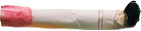
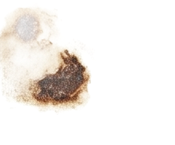
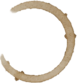
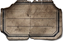

Matrix Rain
function draw() {
// Semi-transparent background
// for the trailing glow effect
background(19, 27, 35, 25);
for (let s of streams) {
// 10% chance of highlight
if (random() > 0.9) {
fill('#E7DFC6'); // Parchment
} else {
fill('#2274A5'); // Blue
}
// Random Katakana character
let charCode = 0x30A0
+ floor(random(0, 96));
let char =
String.fromCharCode(charCode);
text(char, s.x, s.y);
s.y += s.speed;
// Wrap around when off-screen
if (s.y > height) {
s.y = random(-300, 0);
s.speed = random(3, 8);
}
}
}

Une pluie de caractères Katakana tombant à la « Matrix ». Chaque colonne du canvas est un stream avec sa propre vitesse (entre 3 et 8 pixels/frame).
L'effet de traînée lumineuse est créé par un fond semi-transparent : background(19, 27, 35, 25) — au lieu d'effacer complètement l'image, on dessine un voile sombre à chaque frame, ce qui fait disparaître progressivement les anciens caractères.
Les caractères sont en bleu (#2274A5) avec 10% de chance d'apparaître en couleur parchemin (#E7DFC6), simulant l'éclat lumineux du caractère de tête.
Chaque caractère est choisi aléatoirement dans la plage Unicode Katakana (0x30A0 à 0x30FF) via String.fromCharCode().